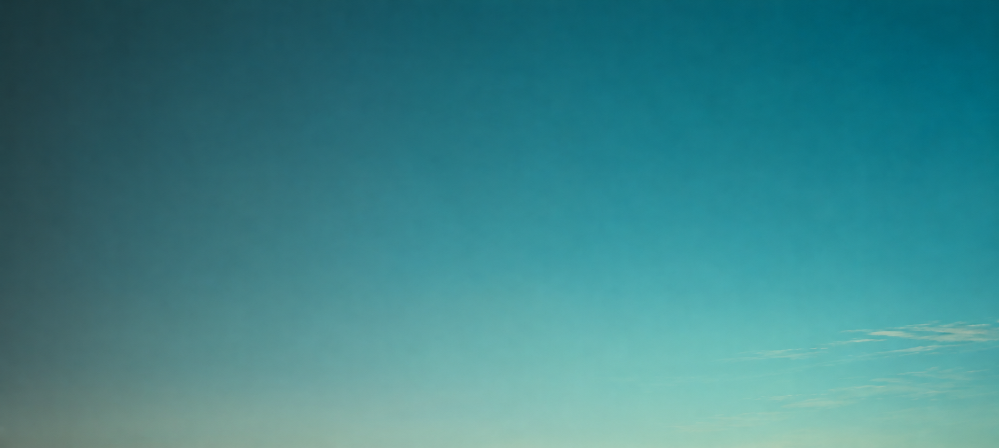
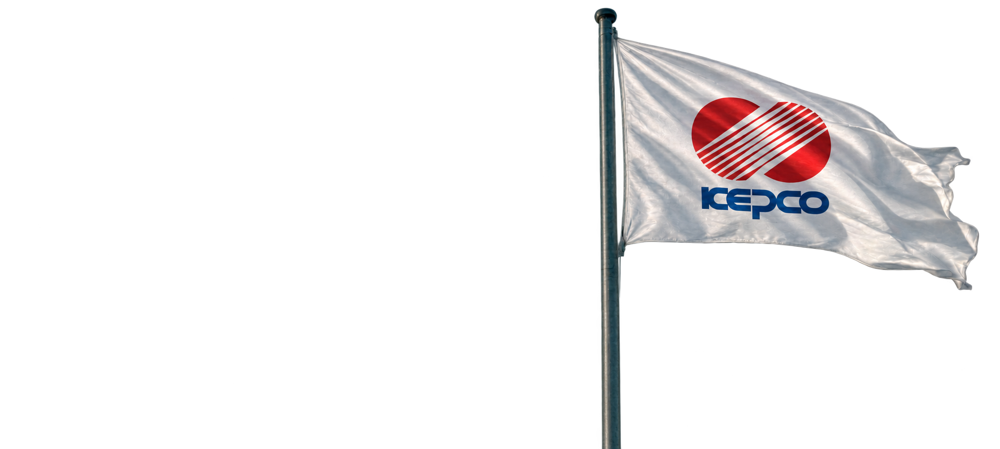
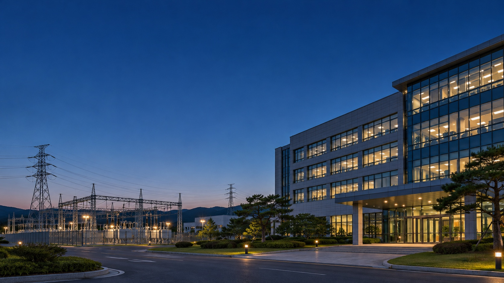

VOL.643 · 2027 JANUARY
이달의 주제 기류, 방향을 읽다


COVER STORY
THEORY
바람은 보이지 않아도깃발은 흔들린다
VOICE
2027 한전인의 바람
한전인의 2027 새해 바람을 담은 영상을 보고 이벤트에 참여해보세요.
01 / 04
PERSPECTIVE
메가 프로젝트 시대의
전력공급 속도는 국가 경쟁력
조홍종 단국대학교 경제학과 교수
속도가 곧 경쟁력입니다

TWIN TRIP
해가 떠오르는 곳, 땅이 끝나는 곳
그곳에 서다
VS
울산 간절곶 KOREA · ULSAN
포르투갈 호카곶 PORTUGAL · CABO DA ROCA